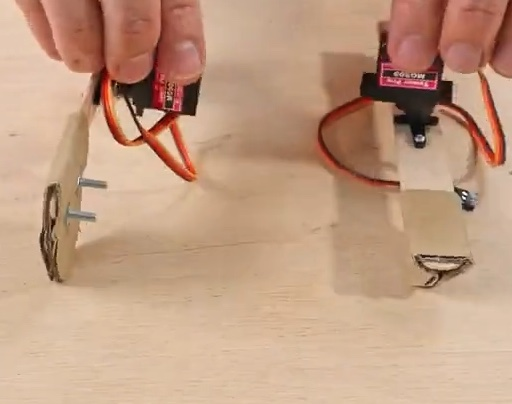

4. Both Front and Back Legs¶
Compare Front and Back Leg Assemblies¶
In this step, compare the front leg assembly and back leg assembly before fixing them to the Robot Dog body. This check is important because both leg mechanisms must be aligned properly for smooth walking.

Parts Required¶
| Part | Quantity | Description |
|---|---|---|
| Front leg assembly | 1 set | Completed in the front leg assembly step |
| Back leg assembly | 1 set | Completed in the back leg assembly step |
Assembly Check¶
1. Place Both Leg Assemblies Side by Side¶
Place the front leg assembly and back leg assembly on a flat surface.
2. Check the Leg Direction¶
Make sure both leg assemblies are facing the correct direction.
The legs should be mounted in such a way that they can move freely when the servo rotates. If one leg assembly is reversed, the Robot Dog may not walk correctly.
3. Check the Screw and Nut Position¶
Inspect the screws and nuts on both assemblies.
Make sure:
- Screws pass through the cardboard leg and ice cream stick properly.
- Nuts are fixed securely.
- No screw is loose.
- Screws are not touching the servo body.
- The cardboard legs are not bent or damaged.
4. Compare the Front and Back Legs¶
Both assemblies should look balanced.
Check the following:
| Check Point | What to Verify |
|---|---|
| Leg alignment | Both legs in each assembly should be parallel. |
| Servo position | Servo should be firmly attached to the horn and stick assembly. |
| Height | Both legs in the same assembly should be at the same level. |
| Wire position | Servo wires should not get pulled or trapped. |
5. Test Movement Manually¶
The legs should move smoothly without rubbing against the servo body or the ice cream stick.
6. Correct Any Misalignment¶
If the legs are not straight:
- Loosen the nuts slightly.
- Align the legs again.
- Tighten the nuts gently.
- Check movement again.
Do not overtighten the nuts, as this may damage the cardboard or restrict movement.
Compare Both Legs Video¶
Common Issues and Fixes¶
| Issue | Possible Reason | Solution |
|---|---|---|
| One leg is loose | Nut is not tightened properly | Tighten the nut gently. |
| Legs are not parallel | Leg was fixed at an angle | Loosen and realign the leg. |
| Servo horn does not move freely | Screw is touching the servo body | Adjust the screw position. |
| Assembly tilts to one side | Legs are mounted unevenly | Recheck alignment and height. |
| Servo wire is twisted | Wire was wrapped during assembly | Free the wire before mounting. |
Completed Step¶
Both front and back leg assemblies are now ready.
In the next step, we will mount these leg assemblies on the main body of the Robot Dog.